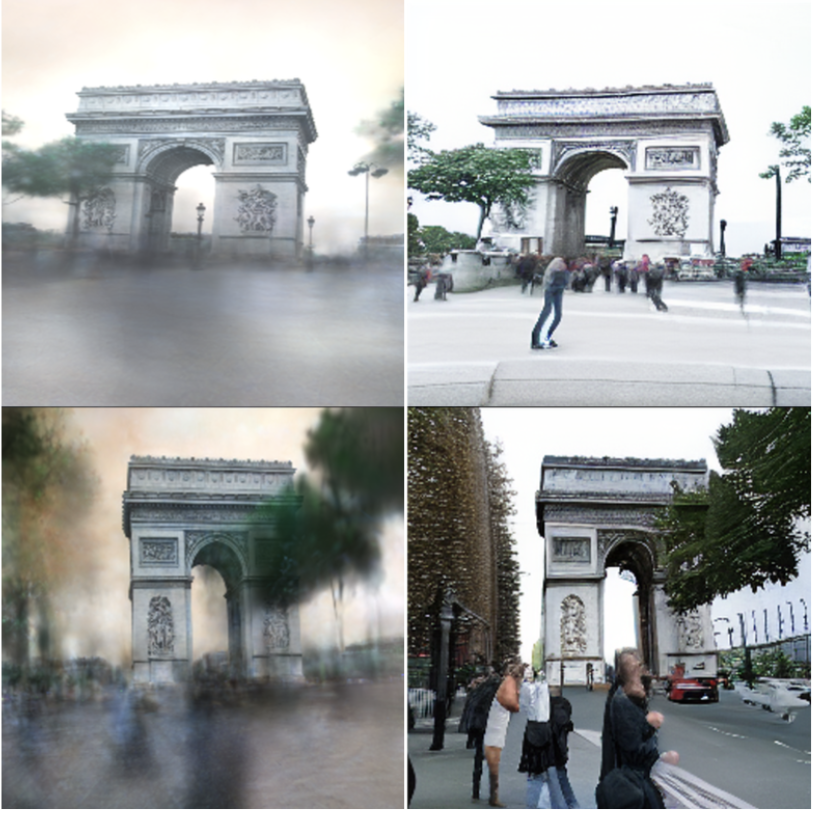

|
Roshan Roy I'm a second-year MS in Computer Vision student at Carnegie Mellon University, advised by László Jeni. I'm also a research engineer at Lockheed Martin, Rotary and Mission Systems in Philadelphia. Earlier, I was an undergrad in CS at BITS Pilani. I'm most interested in building multi-modal perception systems. |
{kind=link}
Recent News
|
Selected Research |

|
Jensen Shannon Divergence in Safe Multi-Agent RL
Rushikesh Zawar*, Prabhdeep Sethi*, Roshan Roy* , ICLR 2024, Tiny Papers Short Paper Using Jensen Shannon Divergence to improve both safety and performance in multi-agent reinforcement learning. |
Projects |
|

|
Cleaning Casually Captured Splatting Scenes with Diffusion Priors
Roshan Roy, Bhuvan Jhamb, Joel Julin Jeff Tan, Report We fine-tune image-conditioned diffusion models to simultaneously remove ghostly artifacts and infill plausible geometry at novel views. |
|
|
Are Masked Autoencoders Actually Scalable Spatio-temporal Learners?
Roshan Roy, Eric Cai Kyutae Sim Michaela Tecson Report We investigate if masked video pre-training can serve as a universal backbone for both image and video tasks. |

|
Camera Preconditioning for Neural Radiance Fields in Nerfstudio
Roshan Roy, Sahil Jain, Bhuvan Jhamb, Report We implement a camera preconditioning module for Nerfstudio, which allows for more consistent and stable training of neural radiance fields. |
|
Website under construction as of March 13 2025. Template credit to Jon Barron. |